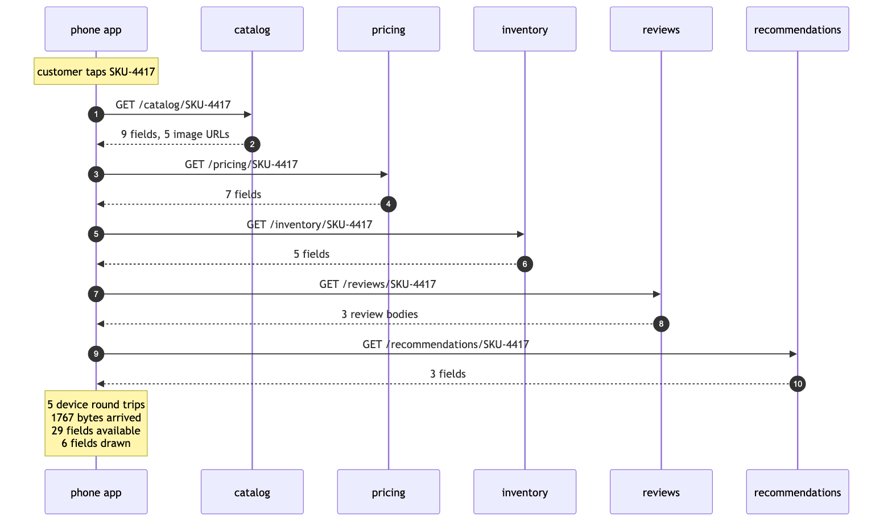
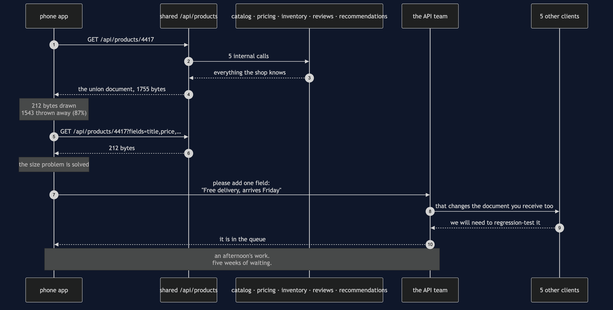
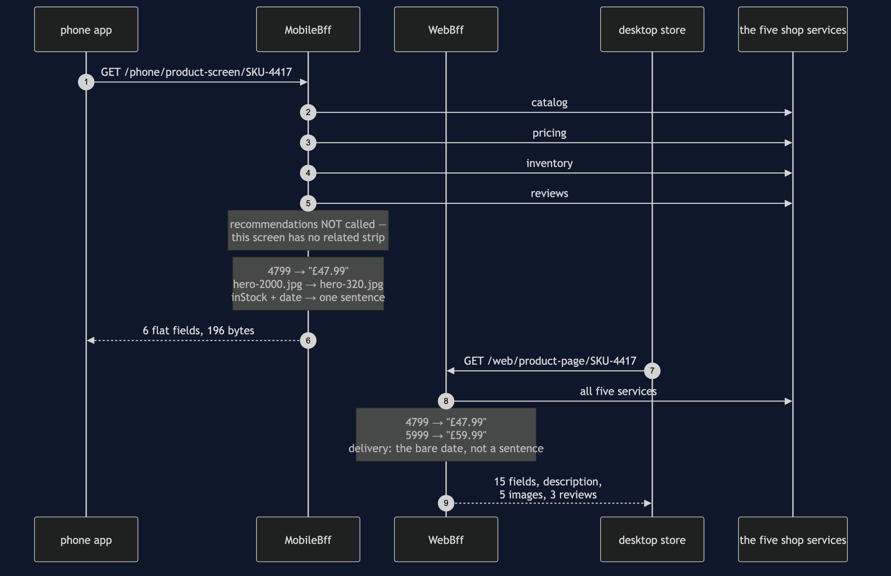
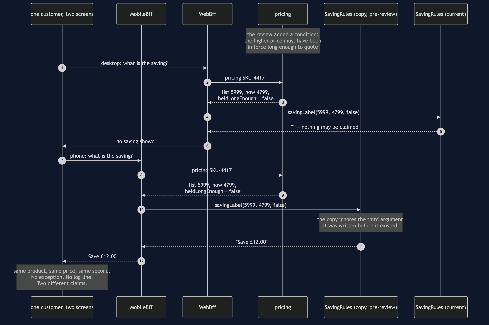
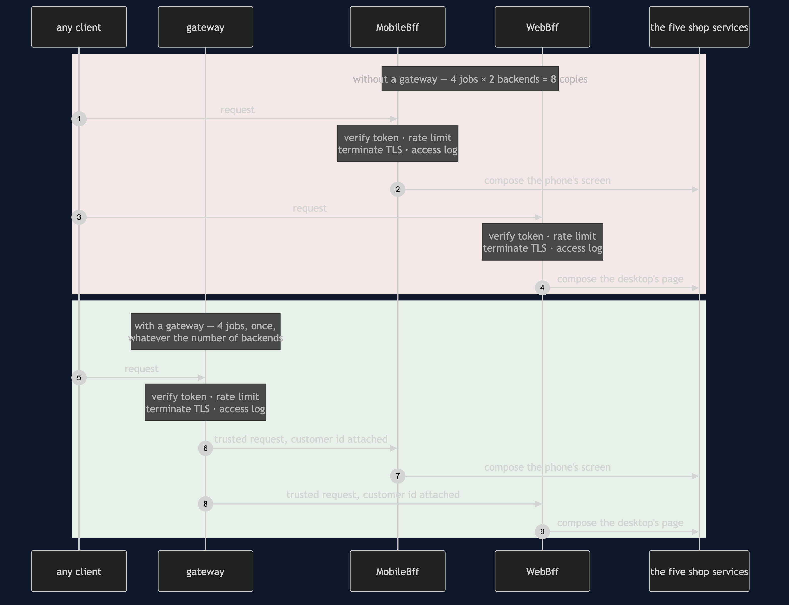

Backends for Frontends Pattern — UML Sequence Diagrams
Five sequences. The first two are the designs the pattern replaces. The third is the pattern itself. The last two are the bill — the silent disagreement, and the line between this pattern and the gateway it sits behind.
1. The Chatty Phone — Five Calls Across A Mobile Network
The first design, and the one shops arrive at by accident. Watch where the dashed boundary is: every single arrow on the customer's side of it is a wait.

Five request-and-response pairs, all of them crossing the customer's own connection, and they happen one after another rather than all at once because the later calls need the earlier answers.
Then read the closing note. Twenty-nine fields arrived and six were drawn, which looks like the headline. It is not. The headline is the five. Bytes cost the customer their data allowance; round trips cost them the two seconds they spend looking at an empty screen, and on a poor connection each one of those five is a tenth of a second of pure waiting before any work has begun.
2. One Shared Endpoint — Better, And Still Wrong
The obvious fix, which genuinely fixes the round trips and genuinely does not fix the thing that matters.

Read the first half and the second half as two separate stories, because they have different endings.
The first half is a success. One round trip instead of five, and once the field list is added, two hundred and twelve bytes — close to what a tailored backend would send. A shop that stopped here would have most of the measurable benefit and none of the extra processes, and plenty of shops do exactly that.
The second half is why the story continues. The phone team asks for one line of text, joined from stock, the delivery rules and the clock. It does not exist in any service, so it is a new field on the shared document, and the shared document is received by five other clients who did not ask for it and must test it anyway.
Notice who is at fault in that exchange: nobody. The API team is not obstructive, the other clients are not unreasonable, and the phone team's request is not exotic. The queue is a property of the structure — one endpoint owned by everybody is owned by nobody in particular.
3. A Backend Per Frontend
The pattern. Two sequences side by side over the same shop, and the interesting part is how differently they end.

For anyone listening rather than looking: the phone makes one call to its own backend, that backend makes four calls inside the data centre, and it sends back six flat fields. Then the desktop makes one call to a different backend, that backend makes five calls inside the data centre, and it sends back fifteen fields.
Three things on that diagram are the pattern, and all three are decisions only a client-specific backend can make.
The call that is not there. MobileBff never asks recommendations for anything, because the phone's product screen draws no related-products strip. A shared endpoint has to call it, because some client somewhere needs it.
The conversions in the note. 4799 becomes "£47.99". The 2000-pixel hero image becomes the 320-pixel thumbnail. Stock plus a date becomes "Free delivery, arrives 2026-09-18". Every one of those is a presentation decision, and every one of them now lives in a process that can be corrected this afternoon rather than in an app release that customers may not install for two years.
The two backends disagreeing. Look at delivery on both sides. The phone gets a whole sentence; the desktop gets the bare date, because the desktop page has a delivery panel and wants the parts. Same field name, same service underneath, two different answers, and neither is a bug.
4. The Bill, Part One: Two Backends, One Rule, Two Answers
The pattern's worst failure. There is no error in this sequence — read it looking for the moment something goes wrong, and notice that there isn't one.

Both backends asked pricing. Both received the same three values, including the flag that says the higher price is too recent to advertise. The shop is not hiding anything and nothing has failed.
The difference is in the last argument. The current rule reads heldLongEnough = false and returns an empty string. The stale copy ignores that argument, because when it was written the argument did not exist. It subtracts, it formats, and it returns a claim the shop is not permitted to make.
Sit with the shape of that failure for a moment, because it is why this one is worth a diagram of its own. There is no arrow in that sequence that is wrong. Every participant behaves correctly according to what it knows. The only place the problem exists is in the relationship between two files, and the only observer who can see it is a customer with a phone in one hand and a laptop in front of them.
The rule the diagram argues for: a backend for a frontend may hold the shape. Anything the shop would still believe with every client switched off belongs behind it, with one implementation.
5. The Bill, Part Two: Where The Shared Jobs Go
The last sequence is two sequences, and the difference between them is the answer to "how is this different from an API gateway?"

In the first block each backend does the four shared jobs itself: eight copies of work that is identical by definition. Add a third client and it is twelve. The way this happens is not negligence — the nearest place to put token verification is inside whichever backend you have open, and each individual decision to do it there is defensible.
In the second block the gateway does them once, and the backends trust what it passes them. The count is four whether there are two backends or nine, which is why CrossCutting.copiesBehindAGateway() takes no argument.
And the line, stated as one question you can apply to any file:
- "What does this screen need?" → it belongs in a backend for that frontend.
- "Is this request allowed in at all?" → it belongs in front of all of them.
A gateway is about entry. A backend for a frontend is about shape. Almost every real system has both, arranged exactly as the second block above, and that is the correct relationship between two patterns people spend a lot of time confusing.